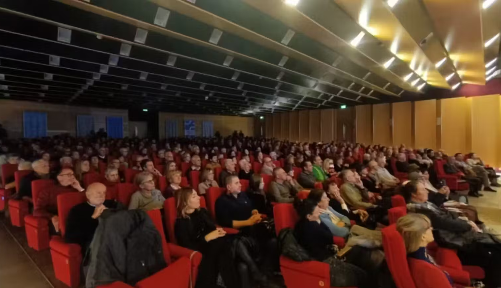

La Filarmonica ha celebrato la ricorrenza di San Nicolò con un programma dedicato alla Mitteleuropa. Il concerto ha confermato il forte legame tra il gruppo e il pubblico lecchese.
Il tradizionale concerto ha riempito l’auditorium della Casa dell’Economia.

La Filarmonica ha celebrato la ricorrenza di San Nicolò con un programma dedicato alla Mitteleuropa. Il concerto ha confermato il forte legame tra il gruppo e il pubblico lecchese.